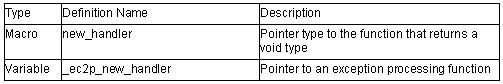

Memory Management Library
The header file for the memory management library is as follows.
<new>
Defines memory allocation/deallocation function. By setting an exception processing function address to the _ec2p_new_handler variable, exception processing can be executed when memory allocation fails. The _ec2p_new_handler is a static variable and the initial value is NULL. If this handler is used, reentrant will be disabled.
Operations required for the exception processing function:

1. void* operator new( size_t size)
Allocates a memory area with a size specified by size.
If no memory area is allocated and when the new_handler is set, new_handler is called.
Return value: If memory allocation succeeds: Pointer to void type
If memory allocation fails: NULL
2. void* operator new[]( size_t size)
Allocates array area with the size specified by size.If no array area is allocated and when the new_handler is set, new_handler is called.
Return value: If memory allocation succeeds: Pointer to void type
If memory allocation fails: NULL
3. void* operator new( size_t size, void *ptr)
Allocates the area specified by ptr as the memory area.
Return value: ptr
4. void* operator new[]( size_t size, void *ptr)
Allocates the area specified by ptr as the array area.
Return value: ptr
5. void operator delete( void* ptr)
Deallocates the memory area specified by ptr.
If ptr is NULL, no operation will be performed.
6. void operator delete[]( void* ptr)
Deallocates the array area specified by ptr.
If ptr is NULL, no operation will be performed.
7. set_new_handler(new_handler new_P)
Sets new_P in _ec2p_new_handler.
Return value: Value of _ec2p_new_handler